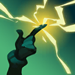

起手裝備
 長劍
長劍
雲陶狂箭降價後仍適合婕莉持續普攻堆暴擊，颶風接續範圍輸出；多明尼克提前第三件，無盡第四、嗜血第五。 長劍起手保留；五成裝與獨立二、三級鞋線已分開，未照抄外站 Galeforce 鞋附魔欄。


五件成裝與鞋子分開列示；起手與核心是購買路線，不是額外佔用的成裝欄位。鞋子完成時機仍依對線壓力與回城金錢調整。


改征服者配合技能與普攻的持續交戰，公理奧術大師服務大絕窗口；血脈補續航，強開線可改骨甲。


預設閃現＋光盾，保住婕莉第一輪輸出；超載跑速與三技負責後續機動。
加點優先：Q > E > W
Q > E > W 不變：一技穩定補傷害，三技次滿配合牆體調位；不套用電腦版把 Q 當普攻的操作。
普攻改為朝指定方向射出六發子彈並命中第一個敵人；攻速具有上限，超出上限的部分會轉換為額外物攻。
有後續版本調整的項目以較新數值為準；未列出者不代表完整技能成長表。

電擊指定位置，造成魔法傷害與逐漸衰減的緩速；若擊殺目標，會返還魔力並縮短部分冷卻。
有後續版本調整的項目以較新數值為準；未列出者不代表完整技能成長表。
發射電磁脈衝，造成物理傷害與緩速；若先撞上牆體，會擴張成遠距範圍雷射並對英雄與野怪暴擊。
有後續版本調整的項目以較新數值為準；未列出者不代表完整技能成長表。
短距離衝刺並強化接下來數次普攻，使其穿透並造成額外魔法傷害；碰觸地形時會沿牆快速移動，命中英雄可縮短冷卻。
有後續版本調整的項目以較新數值為準；未列出者不代表完整技能成長表。
釋放環形電流造成魔法傷害；命中英雄後進入超載，提高跑速與突破上限的攻速，普攻轉為快速三連射並產生連鎖傷害。
有後續版本調整的項目以較新數值為準；未列出者不代表完整技能成長表。
保留手機版方向性普攻、一技主動施放及大絕命中英雄啟動超載；光盾取代鬼步後，移動主要依超載與三技。
1技緩速 → 方向性普攻 → 2技直線消耗 → 再次普攻 → 3技撤退
一技先緩速讓普攻更容易命中，二技補傷害後視情況撤退；三技在前期冷卻較長，不要無視野向前使用。
3技沿牆位移 → 2技撞牆雷射 → 穿透普攻 → 1技緩速 → 持續追擊
沿牆移動時施放二技可快速形成長距離雷射，落地後三次強化普攻可穿透目標；進場前先確認牆後視野與退路。
4技命中英雄 → 三連射連鎖 → 1技刷新超載 → 持續普攻 → 3技換位 → 追擊輸出
大絕必須命中至少一名英雄才能啟動強勢狀態；之後用普攻與技能不斷刷新持續時間，利用三技換角度而不是直接脫離戰場。
婕莉的普攻是方向性六連射，會被前方士兵擋住，因此補刀與換血都要先確認彈道。前期射程與爆發有限，以穩定發育為主；一技可安全收尾並在擊殺單位時返還魔力與部分冷卻，三技通常保留穿牆撤退。
雲陶狂箭、芮蘭颶風箭後先補多明尼克，不急著跳到無盡。用二技撞牆雷射在團前消耗，確認能命中英雄再開大，以征服者延長輸出；光盾應在被集火的第一輪使用，三技保留下一個安全落點。
雷霆萬鈞命中英雄後，要持續以普攻或技能刷新超載並累積跑速。沿牆、前排與視野安全區移動，保持不斷輸出而不是一次衝到後排；暴擊能更快縮短三技冷卻，利用多次位移反覆調整射擊角度。
克黎思妲的早期連跳、凱特琳的射程和崔絲塔娜的炸彈爆發都會壓縮成形時間；避免讓兵線擋住主要普攻後仍硬換。 威脅名單採同分路指南，較有利名單保留機制判斷並移除與威脅名單重疊者；現有輔助組合逐項複核技能互動後保留。
對局名單是機制與分路判斷，不代表固定勝率；需同時看雙方熟練度、兵線與陣容。
克黎思妲的早期連跳、凱特琳的射程和崔絲塔娜的炸彈爆發都會壓縮成形時間；避免讓兵線擋住主要普攻後仍硬換。
下列輔助配合以技能互動為依據。悠咪、露璐、米里歐仍可配合本頁打法；先確認對手輔助的控制與兩邊召喚師技能，單一射手對局不代表必勝。
附身加速與治療能放大婕莉的機動性，特別適合長時間追擊團戰。
護盾、加速與大絕能讓婕莉安全累積輸出並避免被突進秒殺。
增程與保護能改善婕莉的輸出空間，解控也能避免大絕節奏中斷。
依婕莉的超載期間的方向普攻與技能路線選擇替換；先看實際死亡與傷害不足原因。
依敵方前排成形調整
觸發：敵方前排已形成高生命或高防禦，正面輸出受阻。
婕莉保留前述五成裝加獨立鞋線；同一格不同情境擇一替換，不全部加購。
先保留預設穿甲核心，單一裝備格的調整不代表重買另一套。
保命格可提早
觸發：被同一輪突進秒殺，無法打出主要技能與普攻。
嗜血者 → 守護天使
主要死亡原因是刺客或突進一次切入，且隊友能掩護復活位置。
嗜血者整格換守護天使，犧牲部分超載期間的方向普攻與技能或持續防禦；復活後無人接應時先改善站位。
嗜血者 → 魔提斯深淵
敵方主要擊殺來源是魔法爆發，且尚未裝另一件生命線裝備。
以嗜血者換魔提斯處理魔法爆發；不把魔防誤當通用抗物理方案。
公理奧術大師 → 骨甲
選角時已確定會承受短時間連段強開。
放棄公理奧術大師的進攻收益，先保住婕莉的第一輪輸出。
復活與魔法生命線處理的傷害不同，按實際威脅擇一；盾弓與魔提斯不重複保留。
先判斷控制能否解除
觸發：可解除的禁錮、暈眩等控制反覆中斷輸出。
嗜血者 → 水星彎刀
可解除的控制反覆讓自己無法輸出，且閃現不能解決。
以嗜血者換水星彎刀；主動要手動使用，不能解除擊飛或擊退，也不是舊版附魔。
水星彎刀是成裝，不佔鞋子升級；擊飛、擊退須靠預先走位或隊友保護。
治療已影響集火時
觸發：敵方持續治療抵銷集火，且團隊缺乏穩定重創。
多明尼克的問候 → 致死宣告
敵方治療或吸血持續影響勝負，隊友無法穩定施加重創。
致死宣告替換多明尼克；保留暴擊、穿甲與重創，不並排買兩件。
需要時先用死刑宣告過渡；不要把所有敵方英雄都當成必出重創的理由。
團隊無其他反盾者才承擔
觸發：大量反覆護盾持續阻止集火，且自己能穩定命中目標。
嗜血者 → 巨蛇鋒牙
隊友無法施加反盾，且護盾確實抵銷主要輸出。
嗜血者換巨蛇鋒牙會犧牲原末段功能；婕莉仍需保留主要輸出核心，只有單一小護盾時不換。
反盾屬團隊分工，不為一個小盾放棄整條普攻或技能路線。
本頁校正版本：7.3b；校正日期：2026-10-15。
參考來源標示版本：7.3b
Tier、出裝、符文與對局是本站編輯建議，不是官方推薦或已驗證台服勝率。v118延續同日v117的逐路複核，針對來源缺口及數值衝突再核對；未宣稱所有技能已在手機內逐級實測。
評級理由：按同分路參考由 S 調為 A；超載團戰上限仍高，但前期方向普攻受兵線阻擋且需要安全啟動大絕。
Riot 官方資料 ↗ · WildRiftFire 參考攻略 ↗
本頁延續2026/10/15 v117的飛龍路逐項複核，當前採用7.3b來源；來源只用作配置與機制參考，不等同官方推薦或台服即時勝率。
按同分路參考由 S 調為 A；超載團戰上限仍高，但前期方向普攻受兵線阻擋且需要安全啟動大絕。
歷史資料有後續調整時，以較新版本數值為準。
| 項目 | 調整前 | 調整後 |
|---|---|---|
| 超量攻速轉換為物攻的比例 | 50% | 60% |
| 傷害 | 13 / 15 / 17 / 19 / 21 + 105 / 110 / 115 / 120 / 125%物攻 | 20 / 24 / 28 / 32 / 36 + 102 / 104 / 106 / 108% / 110%物攻 |
| 項目 | 調整前 | 調整後 |
|---|---|---|
| 傷害 | 35 / 60 / 85 / 110 + 55 / 70 / 85 / 100%物攻 + 30 / 35 / 40 / 45%魔攻 | 70 / 100 / 130 / 160 + 80% ×額外物攻 + 30 / 35 / 40 / 45%魔攻 |
| 緩速持續時間 | 2秒 | 1.5秒 |
| 項目 | 調整前 | 調整後 |
|---|---|---|
| 傷害 | 30 / 70 / 110 / 150 + 80%物攻 + 40%魔攻 | 60 / 100 / 140 / 180 + 100%物攻 + 50%魔攻 |
| 暴擊傷害 | 目前暴擊傷害倍率 | （150% + （暴擊傷害倍率- 2）× 0.5） |
| 項目 | 調整前 | 調整後 |
|---|---|---|
| 後續傷害係數 | 80 / 85 / 90 / 95% | 85 / 90 / 95 / 100% |
| 項目 | 調整前 | 調整後 |
|---|---|---|
| 新星傷害 | 150 / 200 / 250 + 70%額外物攻 + 80%魔攻 | 150 / 225 / 300 + 60%額外物攻 + 100%魔攻 |
| 超載持續時間 | 1.5秒 | 2.5秒 |
| 超載持續時間增加 | 非暴擊增加1.5秒，暴擊增加4.5秒 | 非暴擊增加2.5秒，暴擊增加7.5秒 |
| 超載閃電物攻係數 | 25% | 30% |
| 暴擊傷害 | 目前暴擊傷害 | 150% +（暴擊傷害 - 2）× 0.5 |
| 項目 | 調整前 | 調整後 |
|---|---|---|
| 基礎生命 | 630 | 600 |
| 每級生命成長 | 128 | 136 |